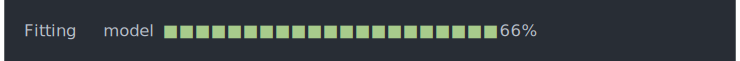
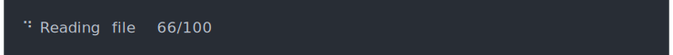
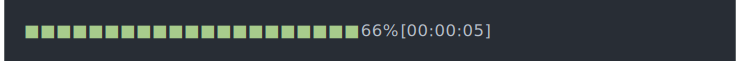
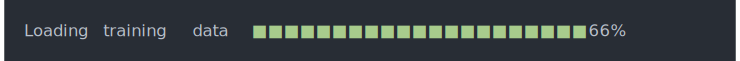
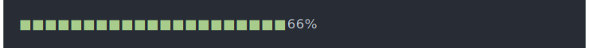
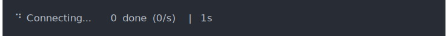
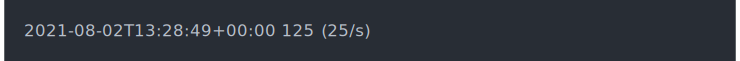

| progress-variables {cli} | R Documentation |
Progress bar variables
These variables can be used in cli progress bar format
strings. They are calculated on demand. To use a variable, e.g. pb_bar
in a package, you either need to to import pb_bar from cli, or use
the qualified form in the format string: cli::pb_bar.
Similarly, in R scripts, you can use pb_bar after library(cli),
or cli::pb_bar if you do not attach the cli package.
pb_barCreates a visual progress bar. If the number of total units is unknown, then it will return an empty string.
cli_progress_bar(
total = 100,
format = "Fitting model {cli::pb_bar} {cli::pb_percent}"
)

pb_currentThe number of current progress units.
cli_progress_bar(
total = 100,
format = "{cli::pb_spin} Reading file {cli::pb_current}/{cli::pb_total}"
)

pb_current_bytesThe number of current progress units formatted as bytes. The output has a constant width of six characters.
cli_progress_bar(
format = "Got {cli::pb_current_bytes} in {cli::pb_elapsed}"
)
pb_elapsedThe elapsed time since the start of the progress bar. The time is
measured since the progress bar was created with cli_progress_bar()
or similar.
cli_progress_bar(
total = 100,
format = "{cli::pb_bar} {cli::pb_percent} [{cli::pb_elapsed}]"
)
pb_elapsed_clockThe elapsed time, in hh::mm::ss format.
cli_progress_bar(
total = 100,
format = "{cli::pb_bar} {cli::pb_percent} [{cli::pb_elapsed_clock}]"
)

pb_elapsed_rawThe number of seconds since the start of the progress bar.
cli_progress_bar(
total = 100,
format = "{cli::pb_bar} {cli::pb_percent} [{round(cli::pb_elapsed_raw)}s]"
)
pb_etaThe estimated time until the end of the progress bar, in human readable form.
cli_progress_bar(
total = 100,
format = "{cli::pb_bar} {cli::pb_percent} | ETA: {cli::pb_eta}"
)
pb_eta_rawThe estimated time until the end of the progress
bar, in seconds. This is useful if you want to adjust the default
pb_eta display.
cli_progress_bar(
total = 100,
format = "{cli::pb_bar} {cli::pb_percent} | ETA: {round(cli::pb_eta_raw)}s"
)
pb_eta_strThe estimated time until the end of the progress bar.
It includes the "ETA:" prefix. It is only shown if the time can be
estimated, otherwise it is the empty string.
cli_progress_bar(
total = 100,
format = "{cli::pb_bar} {cli::pb_percent} | {cli::pb_eta_str}"
)

pb_extrapb_extra can be used to access extra data, see the extra argument
of cli_progress_bar() and cli_progress_update().
cli_progress_bar(
total = 100,
extra = list(user = whoami::username()),
format = "Cleaning cache for user '{cli::pb_extra$user}': {cli::pb_current_bytes}"
)
pb_idThe id of the progress bar. The id has the format
cli-<pid>-<counter> where <pid> is the process id, and
<counter> is an integer counter that is incremented every time
cli needs a new unique id.
This is useful for debugging progress bars.
cli_progress_bar(
format = "Progress bar '{cli::pb_id}' is at {cli::pb_current}"
)
pb_nameThe name of the progress bar. This is supplied by the developer, and it is by default the empty string. A space character is added to non-empty names.
cli_progress_bar(
name = "Loading training data",
total = 100,
format = "{cli::pb_name} {cli::pb_bar} {cli::pb_percent}"
)

pb_percentThe percentage of the progress bar, always formatted
in three characters plus the percentage sign. If the total number of
units is unknown, then it is " NA%".
cli_progress_bar(
total = 100,
format = "{cli::pb_bar} {cli::pb_percent}"
)

pb_pidThe integer process id of the progress bar. This is useful if you are aggregating logging output or progress results from multiple processes.
pb_rateThe progress rate, in number of units per second, formatted in a string.
cli_progress_bar(
total = 156,
format = "Reading input files {pb_current}/{pb_total} [{pb_rate}]"
)

pb_rate_rawThe raw progress rate, in number of units per second.
cli_progress_bar(
total = 156,
format = "Reading input files {pb_current}/{pb_total} [{round(pb_rate_raw)}/s]"
)
pb_rate_bytesThe progress rate, formatted as bytes per second, in human readable form.
cli_progress_bar(
total = 256 * 1024 * 1014,
format = paste0(
"Reading data {pb_current_bytes}/{pb_total_bytes} ",
"[{ansi_trimws(pb_rate_bytes)}]"
)
pb_spinA spinner. The default spinner is selected via a get_spinner() call.
cli_progress_bar(
total = 100,
format = "{cli::pb_spin} Reading file {cli::pb_current}/{cli::pb_total}"
)
pb_statusThe status string of the progress bar. By default this is an empty
string, but it is possible to set it in cli_progress_bar()
and 'cli_progress_update()].
cli_progress_bar(status = "Connecting...")

pb_timestampA time stamp for the current time in ISO 8601 format.
cli_progress_bar(
"Loading training data files",
format = "{pb_timestamp} {pb_current} ({pb_rate})"

pb_totalThe total number of progress units, or NA if the number of units is
unknown.
cli_progress_bar(
total = 100,
format = "{cli::pb_spin} Reading file {cli::pb_current}/{cli::pb_total}"
)
pb_total_bytesThe total number of progress units, formatted as bytes, in a human readable format.
cli_progress_bar(
total = 256 * 1024 * 1014,
format = paste0(
"Reading data {pb_current_bytes}/{pb_total_bytes} ",
"[{ansi_trimws(pb_rate_bytes)}]"
)